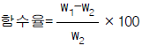
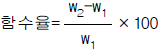
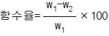
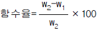

건축일반시공기능장 (2002-07-21 기출문제)
1과목: 임의 구분
1. 조립식건축의 치수조정을 위하여 대한건축학회에서 제정한 기준척도의 내용과 거리가 먼것은?
- 모든 치수는 기준척도 M(10cm)의 배수가 되게한다.
- 건물의 높이는 2M(20cm)의 배수가 되게 한다.
- 건물의 평면상의 길이는 3M(30cm)의 배수가 되게한다
- 모든 치수는 마감치수(부재의 실제길이)로 한다.
(정답률: 알수없음)

2. 철골구조의 가공과 접합에 대하여 바르게 설명한 것은?
- 리벳접합은 시공의 좋고 나쁨에 따라 강도에 미치는 영향이 크고 신뢰도가 낮으며 부재의 단면이 결손되고 소음이 난다.
- 리벳은 재축방향에 평행하게 규칙적으로 직선상에 배치하며 이 리벳의 중심선을 피치라인이라 한다.
- 고장력볼트 접합은 리벳접합과 같은 소음이 없고 시공이 용이하며 반복하중에 대한 이음부의 강도가 크다.
- 용접은 부재단면의 결손이 없고 구조가 간단하며 시공불량에 의한 결함이 생길 우려가 적다.
(정답률: 알수없음)
3. 철골구조의 장점이 아닌 것은?
- 구조체의 자중이 내력에 비하여 적다.
- 현장시공의 공기를 단축할 수 있다.
- 고층건물에서 기둥의 단면적을 줄여 저층의 유효공간을 넓게 할 수 있다.
- 열에 강하고 고온시 강도가 커서 내화, 내구적이다.
(정답률: 알수없음)
4. 블록구조의 종류 중에서 철근콘크리트 구조의 칸막이벽으로 블록을 쌓는 것은?
- 조적식 블록조
- 장막벽 블록조
- 보강 블록조
- 거푸집 블록조
(정답률: 알수없음)
5. 철골 조립공사에서 가볼트의 사용갯수는 조립재 리벳갯수의 얼마 이상으로 하는가?
- 1/2
- 1/3
- 1/4
- 1/5
(정답률: 알수없음)
6. 철근콘크리트 기둥에 관한 기술 중 옳지않은 것은?
- 최소 단면치수는 20cm 이상으로 한다.
- 최소 단면적은 600cm2 이상으로 한다.
- 주근은 보통 철근지름 13mm 이상으로 한다.
- 원형, 다각형기둥에서 주근은 최소 8개이상 배근한다.
(정답률: 알수없음)
7. 보통시멘트의 7일 압축강도가 200kg/cm2 일때 시멘트의 28일 압축강도의 추정치는?
- 280kg/cm2
- 300kg/cm2
- 330kg/cm2
- 370kg/cm2
(정답률: 알수없음)
8. 물로 반죽한 시멘트의 응결 시작과 끝시간에 대한 규정 중 옳은 것은?(KS규정)
- 1시간∼10시간
- 30분∼6시간
- 30분∼10시간
- 1시간∼6시간
(정답률: 알수없음)
9. 알루미늄에 관한 기술 중 옳지않은 것은?
- 비중은 2.8정도 이다.
- 반사율이 극히 크므로 열차단재로 쓰인다.
- 열팽창이 철의 4배 정도이다.
- 산과 알칼리에 약하다.
(정답률: 알수없음)
10. 목재에 관한 기술 중 옳지 않은 것은?
- 활엽수가 침엽수 보다 수축이 크다.
- 섬유포화점이란 함수율이 30％ 인 목재를 말한다.
- 목재는 건조할수록 강도가 증가한다.
- 허용강도는 최대강도의 1/3-1/5 정도이다.
(정답률: 알수없음)
11. 콘크리트를 부어 넣은 후 보와 슬랩 밑의 받침기둥은 콘크리트의 압축강도가 설계기준강도의 각각 몇 ％에 도달하였을 때 제거하는가?
- 보 밑과 슬랩 밑 다같이 50％
- 보 밑은 85％, 슬랩 밑은 100％
- 보 밑은 100％, 슬랩 밑은 85％
- 보 밑과 슬랩 밑 다같이 100％
(정답률: 알수없음)
12. 자기의 공장에서 가공, 제조한 특정의 재료와 기능 및 노동력을 공급하며 정한 기간안에 특정부분의 공사를 완성 하는 것을 맡은 업자는?
- 재료 공급업자
- 노무 하도급자
- 직종별공사 하도급자
- 외주공사 하도급자
(정답률: 알수없음)
13. 철근의 규격과 사용개소의 조합 중 틀린 것은?
- 슬랩주근 9mm이상
- 대근 6mm이상
- 벽철근 9mm이상
- 기둥주근 16mm이상
(정답률: 알수없음)
14. 철근의 간격은 철근 지름의 몇배 이상으로 하는가?
- 1.0배 이상
- 1.5배 이상
- 2.0배 이상
- 2.5배 이상
(정답률: 알수없음)
15. 시멘트블록 제작시 골재의 최대지름은 블록 최소살두께의 얼마 이하로 하는가?
- 1/2
- 1/3
- 1/5
- 1/7
(정답률: 알수없음)
16. 블록을 쌓을때 시멘트모르타르에 쓰이는 물시멘트비는?
- 30％∼40％
- 40％∼50％
- 60％∼70％
- 79％∼80％
(정답률: 알수없음)
17. 인조석바르기의 줄눈대에 대하여 바르게 설명한 것은?
- 줄눈대 설치는 균열의 확대를 막고 부분적인 보수를 용이하게 한다.
- 목재 줄눈대는 인조석갈기에 사용하며 제거하지 않고 인조석면에 남기고 놋쇠줄눈대는 인조석 씻어내기, 잔다듬에 사용하며 남기지 않고 제거한다.
- 줄눈대의 배치는 허튼줄눈이 주로 쓰이며 통줄눈, 막힌줄눈은 자주 쓰이지 않는다.
- 줄눈대는 미관을 좋게 하지만 바름면의 팽창과 수축에 의한 균열의 원인이 된다.
(정답률: 알수없음)
18. 타일붙임용 모르타르에 사용하는 모래의 규격은 몇 mm체에 100％ 통과하는 것으로 하는가?
- 1.2mm체
- 2.5mm체
- 3.0mm체
- 3.2mm체
(정답률: 알수없음)
19. 내장타일 붙이기에 대한 설명이다. 틀린 것은?
- 내장타일은 도기질로서 정사각형이 많이 사용된다.
- 내장타일은 붙이기전 바탕을 물축임하는 것이 좋다.
- 수도꼭지 등 배관 파이프의 위치는 줄눈이 교차되는 부분이 좋다.
- 외장타일보다 줄눈의 나비를 넓게 하는 것이 좋다.
(정답률: 알수없음)
20. 작업환경에서 재해발생 빈도가 가장 적은 기온의 범위는?
- 12∼15℃
- 15∼17℃
- 17∼23℃
- 23∼26℃
(정답률: 알수없음)
2과목: 임의 구분
21. 조적공사에서 블록 쌓기시 잘못된 것은?
- 쌓기 모르타르는 1:3 배합으로 한다.
- 하루쌓기 높이는 1.2∼1.5m 정도로 한다.
- 보강블록 쌓기는 통줄눈으로 할수있다.
- 블록은 살두께가 두꺼운 면을 밑으로 가게 쌓는다.
(정답률: 알수없음)
22. 인조석바름에서 캐스트스톤(cast stone)이란?
- 인조석 씻어내기
- 인조석 갈기
- 인조석 잔다듬
- 테라죠 바르기
(정답률: 알수없음)
23. 타일 판형붙이기에서 줄눈고치기는 타일을 붙인후 얼마 이내가 좋은가?
- 15분
- 30분
- 60분
- 90분
(정답률: 알수없음)
24. 벽에 대형타일을 붙일 때 하루의 붙임 높이로 가장 적당한 것은?
- 0.7∼0.9m
- 1.0∼1.2m
- 1.3∼1.5m
- 1.6∼1.8m
(정답률: 알수없음)
25. 회반죽바름에 관한 기술 중 틀린 것은?
- 회반죽바름은 소석회에 해초풀을 끓여 넣고 여기에 여물, 모래 등을 섞어 반죽한 것을 바르는 것이다.
- 해초풀은 점성이 있다.
- 여물은 균열을 방지할 목적으로 사용한다.
- 해초물은 끓인지 3일이상 경과한 것을 사용한다.
(정답률: 알수없음)
26. 안전에 관계되는 색깔의 용도로 틀린 것은?
- 빨간색-방화
- 녹색-안전과 보건위생
- 보라색-금지
- 노란색-경고
(정답률: 알수없음)
27. 산업재해의 원인분류에서 교육적 원인이 아닌 것은?
- 안전지식이 부족하다.
- 작업지시가 적당하지 못하다.
- 경험, 훈련 등이 부족하다.
- 안전수칙을 잘못 알고있다.
(정답률: 알수없음)
28. 철골조의 플레이트보에 대한 설명이다. 틀린 것은?
- 플레이트보의 플랜지플레이트의 크기는 전단력에 따라 결정된다.
- L형강과 강판을 리벳접합이나 용접으로 하여 I형 모양으로 조립한 것이다.
- 웨브플레이트는 전단력에 따라 단면이 결정된다.
- 웨브플레이트는 좌굴을 방지하기 위하여 스티프너를 설치한다.
(정답률: 알수없음)
29. 철근콘크리트 구조의 보의 배치에 대한 설명이다. 틀린것은?
- 큰보는 기둥과 기둥을 연결하는 부재이다.
- 작은보는 큰보사이에 설치되어 단지 바닥에 작용하는 하중만을 지지하는 부재이다.
- 바닥 슬랩이 넓은 경우에는 작은보를 사용하여 적당한 넓이로 구획하는 것이 좋다.
- 창고 등과 같이 바닥 슬랩의 적재하중이 큰 경우에는 작은보를 사용해서는 안된다.
(정답률: 알수없음)
30. 공동도급에 대한 설명이다. 옳지 않은 것은?
- 대규모 공사의 시공에 대하여 시공자의 기술 및 자본의 부담이 분산된다.
- 경영방식의 통일로 공사능률이 증대되며 현장관리가 용이하다.
- 공사의 발주 및 시공능력이 증대된다.
- 손익 분담은 각 출자 기업체가 공동으로 계산한다.
(정답률: 알수없음)
31. 아스팔트방수시 펠트의 겹침은 최소 몇 mm 정도 이상으로 하는가?
- 60
- 100
- 120
- 150
(정답률: 알수없음)
32. 비계다리 설치시 물매의 표준은?
- 2/10
- 4/10
- 5/10
- 6/10
(정답률: 알수없음)
33. 1 M2의 바닥에 소요되는 모자이크 타일(30x30cm) 량은?
- 9장
- 11장
- 13장
- 14장
(정답률: 알수없음)
34. 타일붙임후 접착력 시험에서 접착강도는 얼마 이상으로 하는가?
- 1 kg/cm2
- 1.5 kg/cm2
- 3 kg/cm2
- 4 kg/cm2
(정답률: 알수없음)
35. 접착제 붙이기에 의한 타일시공에서 타일 한장의 무게는 얼마 이하여야 하는가?
- 100 g
- 200 g
- 350 g
- 450 g
(정답률: 알수없음)
36. 선의 용도로 짝지어진 것 중 틀린 것은?
- 파선-숨은선
- 실선-단면선
- 이점쇄선-가상선
- 일점쇄선-해칭선
(정답률: 알수없음)
37. 배치도는 다음 도면 중 어느 것을 기준으로 하는가?
- 지하층 평면도
- 1층 평면도
- 2층 평면도
- 지붕 평면도
(정답률: 알수없음)
38. 치수를 옮기거나 선과 원주를 같은 길이로 나눌 때 사용하는 제도용구는?
- 스프링컴퍼스
- 운형자
- 디바이더
- 스케일
(정답률: 알수없음)
39. 글자의 크기는 어느 것을 기준으로 나타내는가?
- 가로
- 높이
- 대각선
- 서체
(정답률: 알수없음)
40. 내력 벽돌벽의 상부에 설치하는 테두리보의 춤의 크기로 옳은 것은?
- 벽두께의 1배이상
- 벽두께의 1.5배 이상
- 벽두께의 2배이상
- 벽두께의 2.5배이상
(정답률: 알수없음)
3과목: 임의 구분
41. 시멘트 중 조기 압축강도가 가장 큰 것은?
- 백색 포틀랜드시멘트
- 중용열 포틀랜드시멘트
- 고로 시멘트
- 알루미나 시멘트
(정답률: 알수없음)
42. 폴리에틸렌수지의 용도로 틀린 것은?
- 방수
- 염료
- 방습시트
- 전선 피복
(정답률: 알수없음)
43. 콘크리트의 장점으로 틀린 것은?
- 압축강도가 크다.
- 내화적이다.
- 방청력이 크다.
- 인장강도가 크다.
(정답률: 알수없음)
44. 목재의 함수율 산출식으로 맞는 것은? (단, W1:목재무게, W2:완전건조시 중량)




(정답률: 알수없음)
45. 벽체길이 6m, 높이 1.6m를 기본형블록(두께150mm)으로 쌓을 때 소요되는 블록장수는?
- 1⑤장
- 125장
- 140장
- 155장
(정답률: 알수없음)
46. 기본형 블록의 실제의 크기로서 길이와 높이는? (단, 단위 mm)
- 390,190
- 360,210
- 320,210
- 400,200
(정답률: 알수없음)
47. 벽돌구조의 내력벽에 대한 기술 중 옳은 것은?
- 2층 또는 3층 건축물의 최상층 부분의 내력벽 높이는 5m를 넘을 수 없다.
- 내력벽의 길이가 10m 초과시 중간에 붙임기둥 또는 부축벽을 만든다.
- 내력벽의 두께는 그 벽 높이의 1/30 이상으로 하여야 한다.
- 내력벽으로 둘러싸인 부분의 바닥면적은 100m2 이하로 한다.
(정답률: 알수없음)
48. 공간 조적벽쌓기에서 벽면적 몇m2 이내마다 연결철물 1개씩 사용하는가?
- 0.2m2
- 0.4m2
- 0.8m2
- 0.9m2
(정답률: 알수없음)
49. 벽돌쌓기 방식 중 벽돌면에 구멍을 내어 쌓는 방식은?
- 엇모쌓기
- 옆세워쌓기
- 무늬쌓기
- 영롱쌓기
(정답률: 알수없음)
50. 벽돌쌓기에서 쌓기용 모르타르에 대한 설명 중 옳은것은?
- 모래는 입도 2.5∼5.0mm를 사용한다.
- 시멘트는 조강포틀랜드시멘트 또는 백색시멘트를 사용한다.
- 모르타르는 물을 붓고 섞은 후 1시간 이내에 사용해야 한다.
- 모르타르의 배합은 1:1∼1:2가 알맞다.
(정답률: 알수없음)
51. 벽돌조 시공에 관한 내용 중 틀린 것은?
- 나무벽돌은 마구리가 벽돌면보다 특별한 경우를 제외하고 나오지 않도록 한다.
- 치장줄눈의 깊이는 보통 4mm 정도로 한다.
- 벽돌 내쌓기 할때는 1켜씩 1/8B 또는 2켜씩 1/4B 로 한다.
- 내력벽은 막힌줄눈으로 한다.
(정답률: 알수없음)
52. 벽돌조에서 내력벽의 두께가 2.0B일 때의 두께에 해당하는 치수는? (표준형벽돌 사용)
- 390mm
- 430mm
- 460mm
- 520mm
(정답률: 알수없음)
53. 미장 바름재로서 쓰이는 와이어라스(wire lath)의 힘살로 사용되는 강선의 지름은?
- 1.2mm 이상
- 1.8mm 이상
- 2.6mm 이상
- 3.2mm 이상
(정답률: 알수없음)
54. 가소성이 높아 시공은 용이하나 소석회보다 건조, 수축이커서 균열이 발생하기 쉬운 미장 재료는?
- 순석고 플라스터
- 혼합석고 플라스터
- 돌로마이트 플라스터
- 경석고 플라스터
(정답률: 알수없음)
55. 바름두께 또는 마감두께가 고르지 않거나 요철이 심할 때 초벌바름 위에 발라 면을 바르게 고르는 것을 무엇이라 하는가?
- 덧먹임
- 고름질
- 손질바름
- 바탕누름
(정답률: 알수없음)
56. 바닥강화재바름 목적과 관계가 먼 것은?
- 분진방지성
- 내화학성
- 탄력성
- 내마모성
(정답률: 알수없음)
57. 바닥 판형타일붙이기 완료 후 모르타르 제거 및 타일면 닦아내는 시기는 언제가 적당한가?
- 즉시
- 1시간 후
- 2시간 후
- 3시간 후
(정답률: 알수없음)
58. 150mm각 타일로 가로 5m, 세로 3m인 벽에 타일을 붙이고자 한다. 가로방향 1켜에 들어가는 온장의 매수와 토막타일 치수는 얼마인가? (단, 줄눈 3mm, 토막타일은 한쪽에만 둔다.)
- 20장, 100mm
- 19장, 93mm
- 33장, 50mm
- 32장, 104mm
(정답률: 알수없음)
59. 안전교육 실시에서 최우선적으로 고려해야 할 사항은?
- 교육대상
- 교육범위
- 교육과목
- 교육목표
(정답률: 알수없음)
60. 작업 중 피로를 일으키는 원인과 거리가 먼 것은?
- 작업의 성질
- 환경조건
- 경제조건
- 신체조건
(정답률: 알수없음)